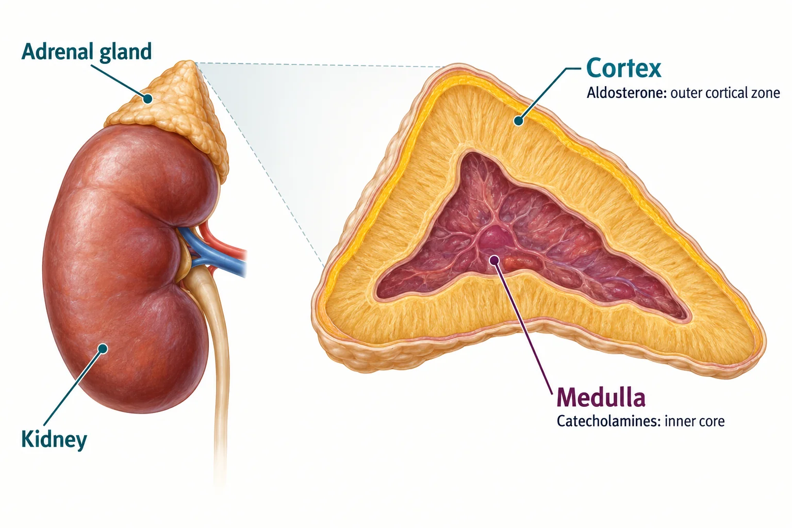

NG-289 · Nursing field notes
Adrenal hypertension
Primary aldosteronism and pheochromocytoma: locate the hormone source, follow its effects, then connect the findings to care.

- Location
Cortex and medulla have different jobs.
- Aldosterone
Track sodium, potassium and pressure.
- Catecholamines
Recognize episodic sympathetic symptoms.
- Confirm
Biochemical testing guides the next step.
Salt handling or sympathetic signaling? Both can raise blood pressure. The hormone system tells you which pathway to investigate.
1. Locate the source
Visual 01 · NG-289
One gland, two hormone systems
The adrenal sits above the kidney. The cortex surrounds the medulla.

Open the image for a closer view. The teaching labels below remain readable on small screens.
Cortex → aldosterone
The outermost cortical zone, zona glomerulosa, makes aldosterone. Excess autonomous production causes primary aldosteronism.
Medulla → catecholamines
Chromaffin cells in the medulla can form a pheochromocytoma. Many of these tumors release catecholamines.
Sources: Endocrine Society: Primary aldosteronism guideline (2025) · Endocrine Society: Pheochromocytoma and paraganglioma guideline
Visual 02 · NG-289
Aldosterone changes kidney handling of salt
This is a transport overview, not a diagram of one cell doing every task.
Sodium reabsorption
More sodium is reabsorbed in the distal nephron. Water balance and volume follow several controls.
Potassium secretion
More potassium may be lost. Aldosterone also promotes hydrogen-ion secretion through a different cell mechanism.
Autonomous aldosterone excessSodium retention supports volume expansion and higher blood pressure.
Renin becomes suppressedPrimary aldosteronism has aldosterone that is inappropriate for the low renin state.
Measure the actual electrolytesPotassium may be normal or low; sodium is often normal. Hypokalemia and alkalosis are clues, not requirements.
Sources: Endocrine Society: Primary aldosteronism guideline (2025)
2. Primary aldosteronism
Treatment and monitoring
- Unilateral disease may be treated with adrenalectomy when appropriate. Bilateral disease or nonsurgical management often uses a mineralocorticoid receptor antagonist.
- Spironolactone can raise potassium. Monitor blood pressure, potassium and renal function; discuss potassium supplements and potassium-containing salt substitutes with the team.
- Low potassium can cause weakness, cramps, constipation or polyuria, but normal potassium does not exclude the disorder.
- Primary aldosteronism has suppressed renin; secondary hyperaldosteronism is driven by upstream stimulation and often has higher renin.
Sources: Endocrine Society: Primary aldosteronism guideline (2025)
Visual 03 · NG-289
Low potassium can change the ECG
These are schematic segments, not diagnostic tracings.
Typical comparison
Possible hypokalemia pattern
Sources: Endocrine Society: Primary aldosteronism guideline (2025)
3. Pheochromocytoma
Visual 04 · NG-289
Catecholamines amplify the sympathetic response
A catecholamine-producing pheochromocytoma can cause episodes, ongoing symptoms, or both.
Headache
A pounding headache may accompany a blood-pressure surge.
Palpitations
The person may notice a racing or pounding heart.
Sweating
Sudden sweating is a classic clue, especially with the other symptoms.
Sources: Endocrine Society: Pheochromocytoma and paraganglioma guideline · Japan Endocrine Society: PPGL guideline (2025)
Visual 05 · NG-289
The pattern helps, but it does not diagnose
Blood pressure is on the vertical axis. The sketches have no numerical scale and are not patient data.
Primary aldosteronism
Often sustained hypertension. It need not be resistant to every usual medication.
Pheochromocytoma
Episodic surges can occur.
Sustained elevation can also occur. Normal readings between episodes are not required.
Sources: Endocrine Society: Primary aldosteronism guideline (2025) · Endocrine Society: Pheochromocytoma and paraganglioma guideline
4. Compare and investigate
Two different causes of hypertension
- Primary aldosteronism
- Autonomous aldosterone · cortex · altered salt handling · low renin · potassium may be normal.
- Pheochromocytoma
- Chromaffin-cell tumor · medulla · catecholamine effects · metanephrine testing · pressure may be episodic or sustained.
Visual 06 · NG-289
Choose the test for the hormone system
A screening result is interpreted in context; one memorized pair of values is not a complete diagnosis.
Primary aldosteronism
ScreenMeasure aldosterone and renin; interpret the ratio with potassium, medicines and collection conditions.
ClarifyRepeat or perform further evaluation when indicated. Correct relevant confounders under supervision.
Localize if neededFor surgical planning, specialist evaluation may include CT and adrenal venous sampling.
Pheochromocytoma
Biochemical testingPlasma free or urinary fractionated metanephrines are commonly used.
Follow collection instructionsPosture, medications, stress and specimen handling can affect results.
Localize and assess riskImaging and additional assessment follow the specialist’s plan.
Sources: Endocrine Society: Primary aldosteronism guideline (2025) · Endocrine Society: Pheochromocytoma and paraganglioma guideline
5. Prepare, treat and follow up
Visual 07 · NG-289
For functional pheochromocytoma: prepare before surgery
The specialist team controls the regimen, targets and timing.
Alpha blockade firstReduce catecholamine-driven vasoconstriction with the prescribed alpha-blocker.
Beta blockade only if neededAdd for persistent tachycardia only after adequate alpha blockade, under specialist direction.
Reassess and prepareMonitor blood pressure, orthostatic symptoms and volume status; follow the individualized preoperative plan.
Sources: Endocrine Society: Pheochromocytoma and paraganglioma guideline · Japan Endocrine Society: PPGL guideline (2025)
Visual 08 · NG-289
After surgery, match follow-up to what changed
Hormone replacement and monitoring depend on the operation and underlying disease.
After primary aldosteronism surgery
- Reassess blood pressure and the need for antihypertensives.
- Monitor potassium and kidney function; medication or supplement needs can change.
After pheochromocytoma surgery
- Watch for hemodynamic changes and hypoglycemia.
- Continue biochemical and clinical follow-up as directed.
Both adrenals removed
- Lifelong glucocorticoid replacement is required; mineralocorticoid replacement is generally needed.
- Teach the individual sick-day and emergency plan.
Steroid treatment or one adrenal removed
- Replacement is not automatic after every unilateral procedure.
- Assess adrenal function and cortisol co-secretion when relevant.
- A taper or stress-dose plan depends on adrenal function and the treatment history.
Sources: Endocrine Society: Primary aldosteronism guideline (2025) · Endocrine Society: Pheochromocytoma and paraganglioma guideline · Endocrine Society: Adrenal insufficiency · Endocrine Society / ESE: Glucocorticoid-induced adrenal insufficiency (2024)
Practice the distinctions
1. Does normal potassium rule out primary aldosteronism?
No. Many patients are normokalemic; aldosterone/renin evaluation is more informative than potassium alone.
2. Why monitor potassium after starting spironolactone?
It reduces potassium loss and can cause hyperkalemia, especially with kidney impairment or interacting treatments.
3. Why is beta blockade not the first step in functional pheochromocytoma?
Without adequate alpha blockade, vasoconstriction can remain unopposed and blood pressure can worsen.
4. Does pheochromocytoma always have a normal pressure between attacks?
No. Hypertension may be sustained, episodic, or a combination.
5. What low-potassium ECG clue may follow the T wave?
A more prominent U wave may be present. The ECG is interpreted with the actual potassium result and clinical assessment.
6. Which tests commonly assess catecholamine-producing tumors?
Plasma free or urinary fractionated metanephrines, collected and interpreted under the clinical protocol.
7. Is a falling blood pressure the only concern after pheochromocytoma removal?
No. Follow hemodynamics, glucose, bleeding and the overall postoperative assessment.
8. Does every unilateral adrenalectomy require lifelong steroids?
No. Hormone replacement depends on remaining function and the disease context. Bilateral adrenalectomy requires lifelong replacement.